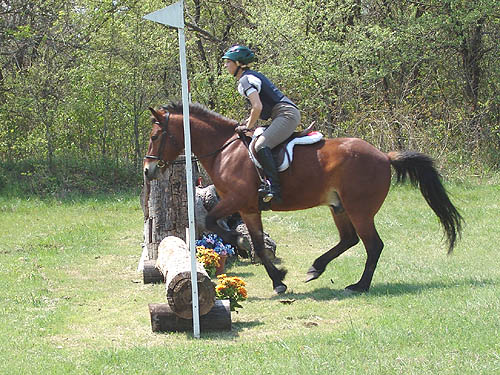
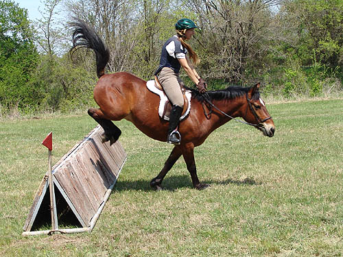
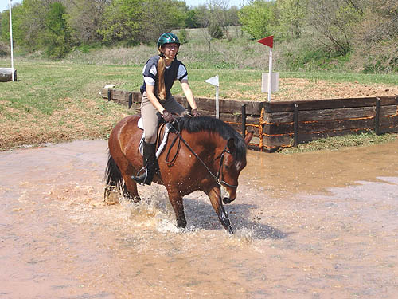
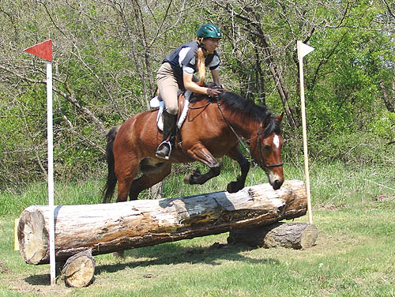
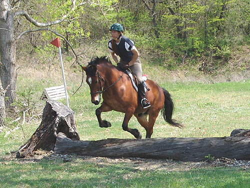

Herbie Schooling
Cross Country It's been a busy week with a jumping lesson
on Thursday,
the cross country school on Saturday and
the Dressage show
on Sunday. Herbie was a champ til the
end. Always loading and
unloading, even in the dark, and showing
a lot of patience waiting
for other riders to be ready, and other
horses to be finished.
This time out, we had to leave at a certain
time, and our group decided to
stay longer. Herbie and I had to leave
the group for a long trek back to the trailers
alone. He neighed once, but never tried
to turn back. He was willing to walk or
trot up the trail and past the scary machinery.
I was carrying my husband's
Digital Camera, and told Herbie that if
I had to choose, I'd have to pick the camera...

The photographer is still working
on timing. This was the first jump we took, and he didn't need a lead,
and really perked up as we headed toward it.

This was the largest jump we
did. One refusal, then he went over it three times, getting better each
time.

Except for playing in the water,
he was very good. The water was quite deep, but after doing each part,
we did the jump before, trotted through the water and jumped the jump after
it.

The jumps we did weren't the
biggest, but he needs to get comfortable with the concept of going cross
country.

I think that we're going to
have to face him at larger stuff to get any form, but right now we'll stay
low to build up confidence.